JYMAG - Karty z plikami telefonu i wybieraniem numerów
Te karty pokazuj± pliki w telefonie i pozwalaj± na pobieranie, wysy³anie i kasowanie elementów.
Na ka¿dej karcie s± cztery przyciski:
- "Pobierz listê" ("Get list") - u¿yj go, aby pobraæ listê z telefonu.
Pokazane bêd± elementy pasuj±ce do bie¿±cej karty. Mo¿esz pobraæ wszystkie listy,
nie nadpisuj± siê one nawzajem.
- "Pobierz zaznaczone" ("Download selected") (je¶li dostêpne) - ten
przycisk wy¶wietli okno, w którym nale¿y wybraæ katalog, do którego elementy zaznaczone
w tabeli powinny zostaæ pobrane.
Jedynym wyj±tkiem jest karta SMS-ów, gdzie ten przycisk otwiera nowe okna z wiadomo¶ciami,
które wybrano do wy¶wietlenia.
- "Wy¶lij" ("Upload") (je¶li dostêpne) - ten przycisk wy¶wietli okno,
w którym mo¿na wybraæ plik, który ma byæ wys³any do telefonu (wyj±tkiem s± karty
budzików i SMS-ów). Typy plików pokazane na
li¶cie s± okre¶lone bie¿±c± kart±. Alternatywnie, mo¿na przeci±gn±æ i upu¶ciæ pliki
na tabelê (z wyj±tkiem budzików i SMS-ów).
- "Usuñ zaznaczone" ("Delete selected") (je¶li dostêpne) - u¿yj tego
przycisku, aby usun±æ elementy zaznaczone w tabeli z telefonu.
Karty z budzikami i SMS-ami s± wyj±tkowe. Na karcie budzików przyciski maj± nastêpuj±c±
funkcjonalno¶æ:
- "Pobierz listê" ("Get list") - u¿yj tego, aby pobraæ listê budzików
z telefonu. Lista ma cztery kolumny:
- "Numer budzika" ("Alarm number") - identyfikator budzika w telefonie
- "Data budzika" ("Alarm date") - dzieñ, w którym uruchomi siê budzik
(format DD/MM/RR)
- "Czas budzika" ("Alarm time") - godzina, o której uruchomi siê budzik
(format GG:MM:SS)
- "Dni budzika" ("Alarm days") - dni tygodnia, w których bêdzie siê
uruchamia³ budzik (dowolna liczba cyfr 1-7 rozdzielonych przecinkami,
1 oznacza poniedzia³ek, 0 oznacza wszystkie dni)
Mo¿esz edytowaæ elementy tabeli (poprzez dwukrotne klikniêcie), ale zachowaj format danych,
gdy¿ w innym przypadku co¶ mo¿e siê zepsuæ.
- "Pobierz zaznaczone" ("Download selected") jest wy³±czony, gdy¿ nie mo¿na
pobraæ budzika z telefonu.
- "Zaktualizuj zaznaczone" ("Update selected") - ten przycisk powoduje, ¿e
zaznaczone budziki zostan± zaktualizowane w telefonie (zwykle po ich zmianie w tabeli).
- "Usuñ zaznaczone" ("Delete selected") spowoduje, ¿e informacja o
zaznaczonych budzikach zostanie usuniêta z telefonu. Nie spowoduje to, ¿e liczba
wierszy w tabeli siê zmieni, gdy¿ liczba budzików jest sta³a (nawet je¶li nie s± u¿ywane).
Przyciski na karcie SMS-ów maja nastêpuj±c± funkcjonalno¶æ:
- "Pobierz listê" ("Get list") - u¿yj tego przycisku, aby pobraæ listê
wiadomo¶ci SMS z telefonu. Lista ma piêæ kolumn:
- "Identyfikator" ("ID") - identyfikator danej wiadomo¶ci w telefonie
- "Status" - status danej wiadomo¶ci.
REC oznacza odebrany,
STO oznacza zapisany, UNSENT oznacza niewys³any
- "Numer telefonu" ("Phone number") - numer telefonu nadawcy
danej odebranej wiadomo¶ci
- "Data/czas" ("Date/time") - data i czas odebrania wiadomo¶ci
- "Wiadomo¶æ" ("Message") - tre¶æ wiadomo¶ci
- "Pobierz zaznaczone" ("Download selected") spowoduje, ¿e pojawi± siê
nowe okna. Te okna pozwol± ³atwo przeczytaæ ca³± wiadomo¶æ.
- "Wy¶lij" ("Upload") - ten przycisk spowoduje, ¿e pojawi siê nowe
okno, gdzie mo¿na wpisaæ numer odbiorcy i tre¶æ wiadomo¶ci oraz wys³aæ tê wiadomo¶æ
(patrz ni¿ej).
- "Usuñ zaznaczone" ("Delete selected") spowoduje usuniêcie z telefonu
wiadomo¶ci aktualnie zaznaczonych w tabeli.
Okno wysy³ania wiadomo¶ci wygl±da tak:
- Wprowad¼ numer telefonu odbiorcy
- Wprowad¼ tre¶æ wiadomo¶ci
- Wci¶nij "Wy¶lij" ("Send"), aby wys³aæ wiadomo¶æ
- Wci¶nij "Wyj¶cie" ("Exit"), aby zamkn±æ okno.
- Skorzystaj z pola rozmiaru czcionki, aby zmieniæ rozmiar czcionki w tym oknie
Na karcie wybierania numerów s± nastêpuj±ce elementy:
- wybieranie numerów/rêczna komenda - u¿yj tych elementów, aby automatycznie stworzyæ
komendê, która wybierze dany numer albo podaæ rêcznie komendê dzwonienia
- przyciski cyfr - u¿yj ich, aby wprowadziæ numer do wybrania (tylko w wybieraniu numerów)
- rozmowa g³osowa/transmisja danych - u¿yj ich, aby wybraæ typ transmisji (tylko w wybieraniu numerów)
- wybieranie tonowe/wybieranie impulsowe/automatyczny wybór - u¿yj ich, aby wybraæ tryb
wybierania (tylko w wybieraniu numerów)
- przycisk "Wykrêæ numer" ("Dial") - ten przycisk spowoduje wybranie
danego numeru (w wybieraniu numerów) lub wys³anie rêcznie podanej komendy do
urz±dzenia (w przypadku wybrania w³asnej komendy)
- przycisk "Roz³±cz siê" ("Hang up") - ten przycisk spowoduje przerwanie
jakichkolwiek bie¿±cych po³±czeñ
- przycisk "Odbierz" ("Answer call") - ten przycisk spowoduje
odebranie przychodz±cej rozmowy
- przyciski "G³o¶niej" ("Volume up") oraz "Ciszej"
("Volume down") - powoduj± zmianê poziomu g³o¶no¶ci
{kind=link}
![[Wygl±d karty dzwonków]](rsrc/tab_ring.png) 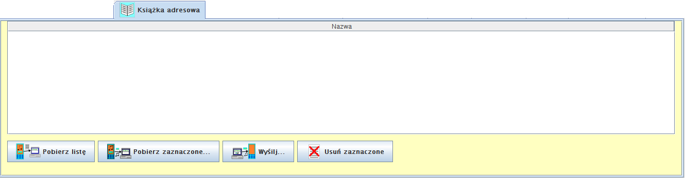
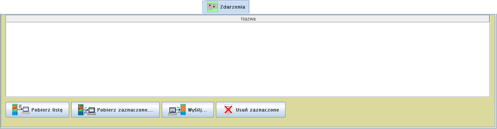
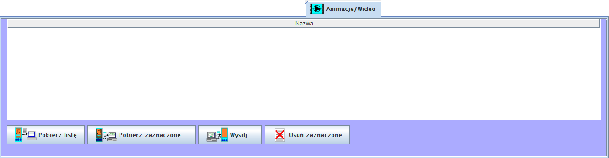
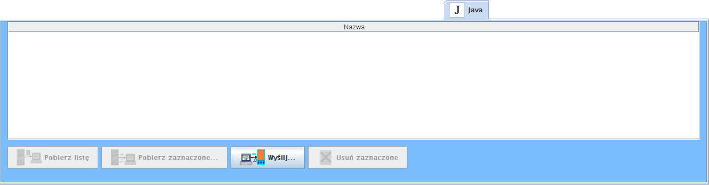
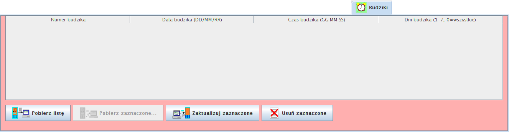
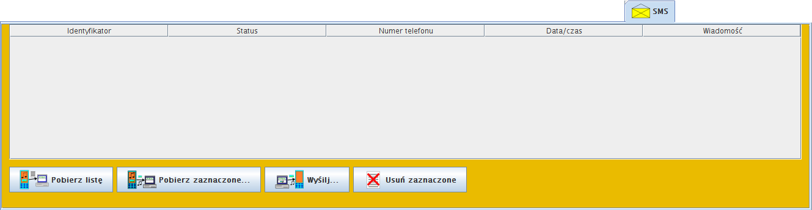
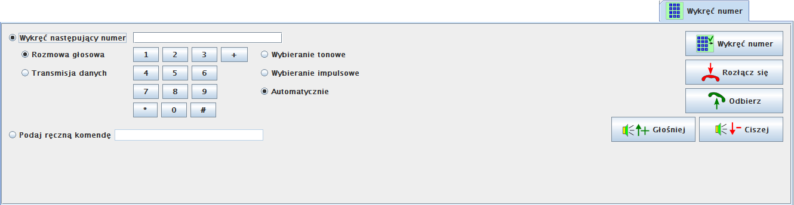
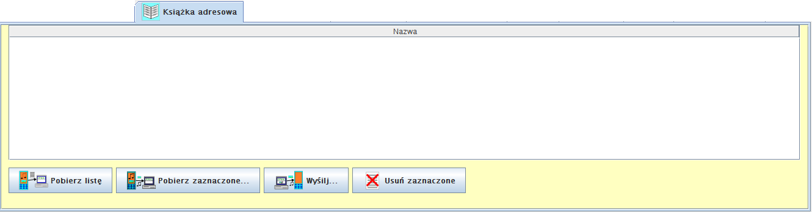
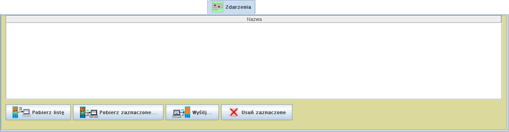
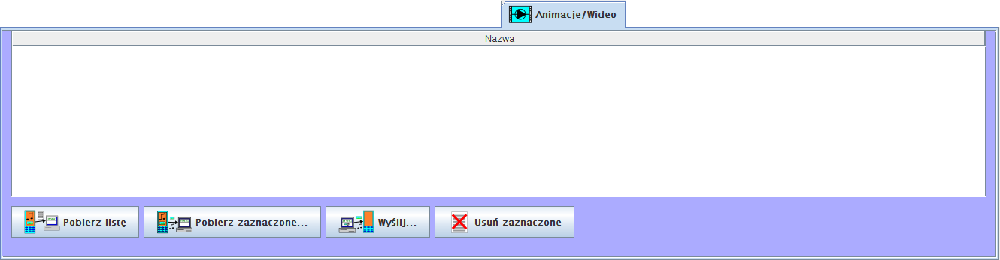
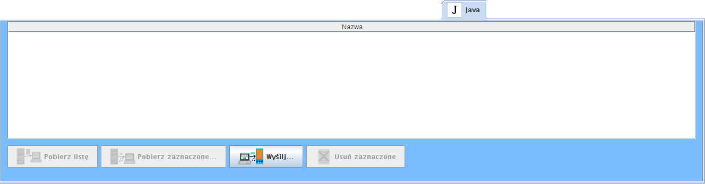
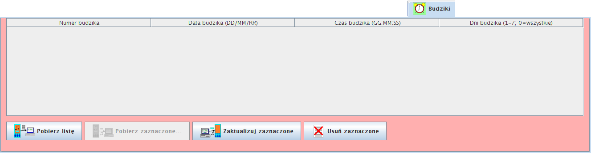
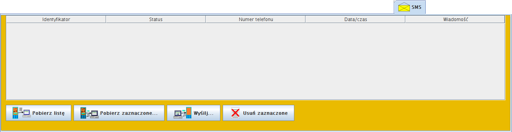
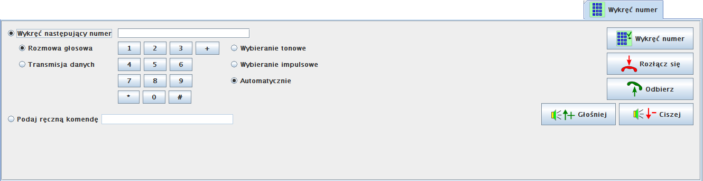
{kind=link}
{kind=link}
{kind=link}
{kind=link}
{kind=link}
{kind=link}
{kind=link}
{kind=link}